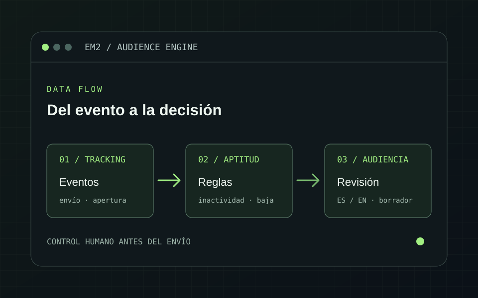

Registrar lo que ocurre
Recoge de Smartlead envíos, aperturas, clics, respuestas, rebotes y bajas; conserva el histórico operativo para consulta en el dashboard.
Smartlead → base operativa
Para un grupo educativo desarrollé un sistema que conecta la actividad de email marketing con el CRM, evalúa la aptitud de cada contacto y prepara audiencias en español e inglés para revisión antes de cualquier envío.
El equipo trabajaba con actividad de campañas en Smartlead y fichas comerciales en Zoho CRM. Para preparar remarketing, no bastaba con reunir emails: había que saber quién había dejado de interactuar, quién había pedido la baja y quién mantenía una gestión o matrícula vigente.
Una persona podía aparecer en varios módulos del CRM con correos distintos. El sistema debía reconocer la identidad por teléfono normalizado y después por email, conservar el motivo de cada exclusión y separar la preparación de audiencia de la decisión de enviar.
La orquestación se implementó en Python sobre las herramientas existentes del cliente. El dashboard permite revisar métricas, reglas y estados sin convertir la selección en un envío automático.
Recoge de Smartlead envíos, aperturas, clics, respuestas, rebotes y bajas; conserva el histórico operativo para consulta en el dashboard.
Calcula la aptitud de las fichas nuevas con reglas de inactividad, sin reescribir los «No» históricos. Las bajas y demás filtros se aplican al preparar la audiencia.
Concilia Zoho, cruza identidades y gestiones activas, separa ES/EN y deja la campaña como borrador. La activación y el envío requieren una decisión humana.

El cierre funcional dejó una conciliación del CRM y audiencias ES/EN preparadas y auditadas. El sistema conserva la razón de inclusión o exclusión y permite revisar borradores sin iniciar campañas.
Actividad, aptitud y remarketing integrados en una misma operación.
Audiencias separadas por idioma y contrastadas con el CRM.
Preparar una campaña no la activa ni envía mensajes.
El cruce usa primero teléfono normalizado y luego email. Considera alumnos, matrículas y gestiones abiertas para no incluir a una persona por una ficha histórica aislada.
La solución se entregó con aplicación web, worker, scripts, pruebas y manuales de instalación. Las reglas y la operación quedan documentadas para el equipo técnico.
El dashboard y las audiencias se validaron en el cierre documentado. La conectividad posterior con la base MySQL del cliente quedó pendiente de recuperación; una mejora adicional de aptitud se entregó en un paquete local para su instalación. Este caso describe la solución entregada y verificada, sin atribuirle campañas activadas, envíos ni resultados comerciales no medidos.
La aportación principal no fue enviar más mensajes, sino dar al equipo una forma consistente de decidir a quién podría dirigirse. Cada audiencia parte de una conciliación reciente, cada exclusión tiene una causa y cada campaña queda pendiente de aprobación.
El proyecto demuestra cómo conectar herramientas comerciales existentes sin perder trazabilidad sobre los datos ni ceder a la automatización la última decisión.
Cuéntame cómo gestionáis hoy la actividad, las exclusiones y la revisión de campañas. Puedo ayudarte a convertirlo en un flujo claro y medible.
Hablemos del proyecto